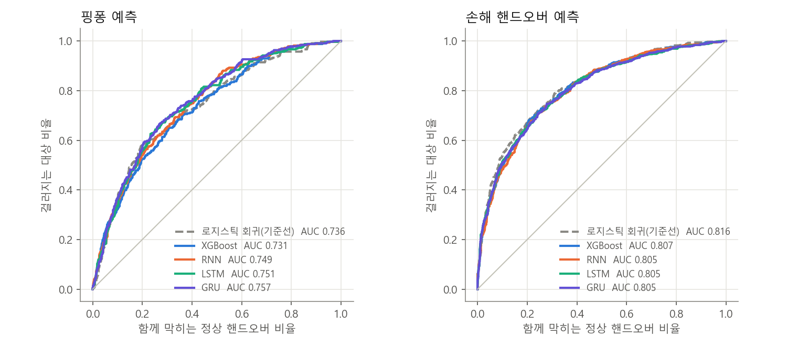
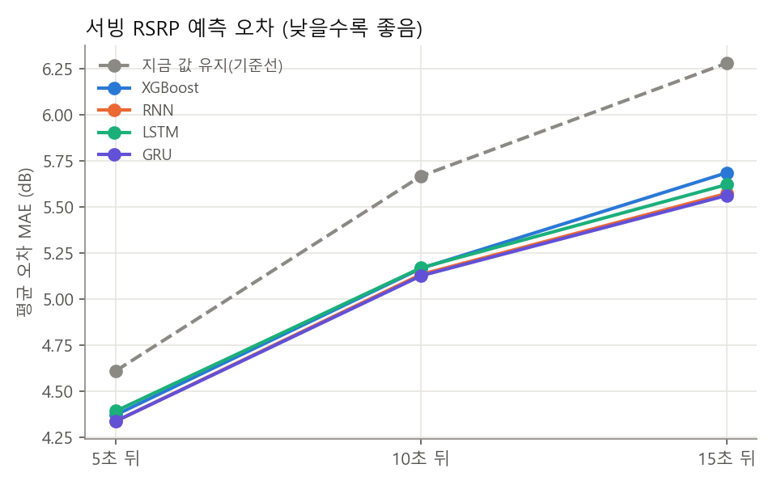
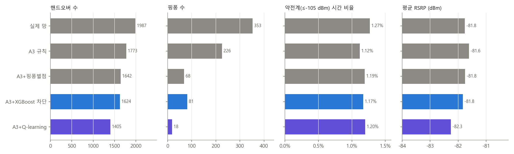
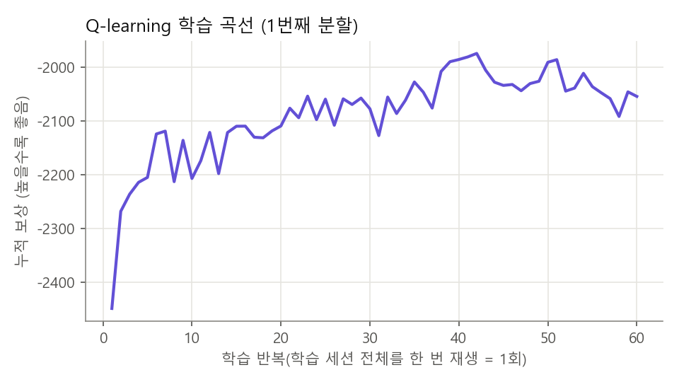

← 결과 모아보기로 돌아가기
핸드오버 AI 모델 연구
후속 실험 · 2026.11.01 보상·규칙 탐색과 DQN·PPO·CQL 심화 연구로 이동 → 이 페이지는 10/28의 1차 결과를 보존한 기록입니다. 후속 연구는 내부 검증 분리·할인 계산 수정·3시드 정책 평가를 적용했습니다. 기존 Q-learning 수치를 새 실험의 최종 성과로 인용하지 마세요.
2026. 10. 28 실험 · 2026. 11. 1 정리 · 논문용 정리 노트 · 원본 보고서 모델_비교_보고.md
한 줄 요약 핑퐁 예측 · 신호 예측 · 핸드오버 정책 3가지 문제에 모델 5종 비교했음.정책은 Q-learning이 핸드오버 −29%, 핑퐁 −95% (약전계 증가 없음)로 제일 좋았음.
핑퐁 예측 AUC (GRU)
0.757
기준선 로지스틱 0.736
10초 뒤 RSRP 오차 (GRU)
5.12 dB
지금 값 유지 5.67 dB
핸드오버 (Q-learning)
−29%
1,987 → 1,405건
핑퐁 (Q-learning)
−95%
353 → 18건
1 연구 질문과 위치2 데이터셋3 문제 정의 (라벨)4 입력 특징5 실험 설계6 모델 설정7 결과 A · 핑퐁 예측8 결과 B · 신호 예측9 결과 C · 핸드오버 정책10 한계 (타당성 위협)11 교수님 todo 진행 상황12 코드 경로 · 재현 방법13 논문 쓸 때 메모14 참고 문헌
1 연구 질문과 위치
배경: 핸드오버는 기지국이 결정함 (단말은 측정 보고만). 그래서 이 연구 결과물은 "단말 측 예측기"와 "망 파라미터 조정(MRO) 정책" 두 가지 형태앞 단계에서 확인한 문제 (핸드오버_데이터_점검_보고.md)
신호 좋은 상태(≥ −85 dBm)의 핸드오버가 61%인데 순효과는 −2.6 ~ −9.1 dB (손해)
핑퐁(30초 내 복귀)이 약 16%, 신호 이득은 사실상 없음 (평균 −0.4 dB)
약전계(≤ −105 dBm) 핸드오버는 +10.6 dB 이득 → 이건 지켜야 함
→ 줄일 대상은 "모든 핸드오버"가 아니라 신호 좋은데 옮기는 것 과 핑퐁
연구 질문
RQ 질문 실험 RQ1 핸드오버 순간에 이미 알 수 있는 단말 측정만으로 핑퐁·손해 핸드오버를 예측할 수 있나? 시계열 모델이 표 모델보다 나은가? A RQ2 직전 60초 측정으로 5·10·15초 뒤 서빙 RSRP를 "지금 값 유지"보다 잘 맞힐 수 있나? B RQ3 핸드오버 허용/보류 정책을 학습하면 신호 손해 없이 핸드오버·핑퐁을 줄일 수 있나? 분류기 차단과 강화학습 중 뭐가 나은가? C
표준 흐름과 연결: 3GPP Rel-19 TR 38.744 (NR 이동성 AI/ML)에서 "단말 측 모델로 RRM 측정·이벤트 예측"을 다룸 → 이 연구는 그걸 상용망 실측 데이터 로 해본 것 (논문 서론 포인트)
연구 단계 (지금까지 흐름)
10/15 · 점검 핸드오버 전후 RSRPho_review.py
→
10/15 · 방향 A 규칙 재생 실험ho_review.py
→
10/15 · 방향 B 사전 로지스틱 AUC 0.73pp_feasibility.py
→
10/28 · 본 실험 모델 5종 비교model_compare.py
→
11월 · 예정 Jev 추가
2 데이터셋
수집: 자체 안드로이드 앱(NetworkTrackerApp v1.1~v1.4), LG U+ LTE, 약 5초 간격 기록
기간: 2026-08-04 ~ 2026-10-25, 폴더 trackingcsv/new/ (8월 이전은 legacy/라 제외)
셀 식별: 서빙은 ECI, 이웃은 (EARFCN, PCI) — 이웃 셀 ID는 폰이 안 줌
이동수단 세션 핸드오버 핑퐁 핑퐁 비율 차량 15 1,109 216 19.5% 지하철 9 816 94 11.5% 도보 4 52 13 25.0% 집(정지) 3 10 3 — 합계 31 1,987 326 16.4%
표 1. 데이터셋 구성. 전체 측정 12,085행, 그중 셀 정보가 신선한 행(셀 정보 나이 ≤ 8초) 10,187행을 신호 예측(B)에 사용. 핸드오버가 있는 세션은 29개.
핑퐁 수가 A(326)와 C의 "실제 망"(353)에서 다름 → A는 앱 플래그 기준 "다음 핸드오버가 30초 안에 원래 셀로 복귀"한 핸드오버 수, C는 재생기가 같은 기준을 (EARFCN, PCI) 단위로 다시 센 값. 논문에서는 정의를 하나로 맞춰 쓸 것.
3 문제 정의 (라벨)
과제 표본 단위 라벨 / 타깃 표본 수 기준선 A-1 핑퐁 핸드오버 A→B 1건 다음 핸드오버가 30초 안에 A로 복귀하면 1 1,987 (양성 326, 16.4%) 로지스틱 회귀 A-2 손해 HO 핸드오버 1건 10초 뒤 서빙 RSRP − 직전 RSRP ≤ −3 dB 이면 1 (10초 뒤 행이 동결이면 제외) 1,928 (양성 676, 35.1%) 로지스틱 회귀 B 신호 예측 신선한 측정 행 1개 5·10·15초 뒤 서빙 RSRP 변화량 (dB, 회귀) 10,187 지금 값 유지 (변화량 0) C 정책 세션 1개 = 에피소드 결정 시점마다 옮김/보류 → 핸드오버·핑퐁·약전계·신호 손해로 평가 평가 세션 합계 실제 망, A3 규칙
A의 입력은 핸드오버 직전 행까지만 씀 (시계열은 row − 1까지) → 미래 정보 누설 없음
단, 표 특징에 "직후 RSRP/RSRQ"가 들어 있음 → A-2(손해 HO)가 쉬워진 이유. 실제 차단에 쓰려면 직후 값 없이 다시 돌려야 함 (10절 )
4 입력 특징표 특징 15개 (핸드오버 시점, pp_feasibility.FEATS)
특징 뜻 rsrp_prev, rsrq_prev핸드오버 직전 행의 서빙 RSRP/RSRQ rsrp_new, rsrq_new핸드오버 직후 행의 서빙 RSRP/RSRQ dwell직전 셀 체류 시간 (초, 300 상한) ho30최근 30초 핸드오버 수 same_enb같은 기지국(ECI // 256) 안 이동인지 inter_freq주파수(EARFCN)가 바뀌는 핸드오버인지 is_return이번 핸드오버 자체가 이미 복귀(앱 핑퐁 플래그)인지 tgt_seen, tgt_top목표 셀이 직전 이웃 목록에 있었나 / 1위였나 tgt_margin직전 이웃 목록에서 목표 셀 RSRP − 서빙 RSRP act_car / act_subway / act_walking이동수단 원핫
시계열 입력 (직전 12행 ≈ 60초, 행당 8개 + 마스크)
열 뜻 rsrp, rsrq서빙 RSRP/RSRQ (빈칸은 앞뒤 값으로 채움) nbr_gap최강 이웃 RSRP − 서빙 RSRP (없으면 −30). 주파수 무관 최강 이웃 이라 비교가 아니라 특징으로만 씀 nbr_cnt이웃 수 ho, pp그 행에 핸드오버/핑퐁 플래그 dt직전 행과 시간 간격 (0~30초) stale셀 정보 동결 여부 (셀 정보 나이 > 8초) mask세션 앞부분이라 12행이 안 되면 0으로 채운 칸 표시
RNN·LSTM·GRU: 시계열 → 순환층, 마지막 은닉 상태에 표 특징을 붙여 출력층으로
XGBoost: 시계열 마지막 6행을 펼쳐(6 × 9 = 54) 표 특징 15개와 붙임 → 69개. 표 특징만 넣은 버전도 따로
5 실험 설계
분할: 세션 단위 5겹 교차검증 (시드 0으로 세션 섞어 5묶음). 한 세션은 학습이나 평가 한쪽에만 → 같은 경로 외우기 방지테스트 세트: 따로 떼어둔 홀드아웃 없음. 각 겹의 평가 세션 예측을 모아서(out-of-fold) 전체 1번 평가신경망 조기 종료: 학습 세션 중 1/6을 다시 세션 단위로 떼어 검증용으로 씀. 검증 손실 10회 개선 없으면 멈춤시드: 신경망·XGBoost 시드 3개(0, 1, 2). 표의 값은 시드 3개 예측 평균(앙상블) 의 지표, 시드별 편차는 따로 기록정규화: 학습 세트 평균·표준편차로만 (평가 세트 정보 안 씀)
평가 지표
과제 지표 왜 A 분류 AUC, AP(평균 정밀도), Brier, ECE(10구간 보정 오차), 상위 k% 차단 시 걸러진 핑퐁 / 같이 막힌 정상 HO 양성 16%로 불균형 → AUC만 보면 안 됨. 실제 쓰는 형태는 "상위 k% 막기" B 회귀 MAE (dB), 이동수단별 MAE 이상값에 덜 민감. 학습 손실도 L1 C 정책 핸드오버 수, 핑퐁 수, 약전계 비율(≤ −105 dBm 행 비율), 평균 RSRP, 같은 주파수 최강 셀 대비 dB, 강제 이동 수 연구방향 문서의 성공 기준: HO −30%, 핑퐁 −80%, 약전계 증가 없음, RSRP 손실 1 dB 이내
6 모델 설정
모델 쓴 곳 설정 로지스틱 회귀 A 기준선 numpy 직접 구현, L2 = 1.0, 경사하강 3,000회, lr 0.1, 표 특징 15개 표준화 지금 값 유지 B 기준선 변화량 = 0 XGBoost (분류) A, C 차단기 트리 300, 깊이 3, lr 0.05, subsample 0.8, colsample 0.8, min_child_weight 5, λ 1.0 XGBoost (회귀) B 트리 400, 깊이 4, lr 0.05, 목적함수 절대오차, min_child_weight 10, 출력 3개 따로 RNN / LSTM / GRU A, B 순환층 1개 (은닉 32) → [은닉 ⊕ 표 특징] → FC 32 → ReLU → Dropout 0.2 → 출력. Adam lr 2e−3, weight decay 1e−4, 배치 64, 최대 80 epoch(A) / 40 epoch(B), 손실 BCE(A) / L1(B, NaN 타깃 무시) Q-learning C 표 방식, 상태 72개, 행동 2개(보류/옮김), α 0.1, γ 0.9, ε 0.3 → 0.02 (학습의 70% 동안 선형 감소), 60 epoch(학습 세션 전체 재생 1회 = 1 epoch)
라이브러리: numpy, pandas, xgboost, PyTorch (CPU, 스레드 8). GPU 없이 PC에서 돌아감.
학습이 빨리 끝나는 이유 (오래 걸린다는 예상과 다른 점)
데이터가 작음: 분류 표본 약 2천 건, 회귀 약 1만 행, 입력 시퀀스 12 × 9. 이미지·언어 모델과 비교하면 수천~수만 배 작음모델이 작음: 순환층 1개·은닉 32 → 파라미터 수천 개 수준. 조기 종료로 보통 80 epoch 다 안 감Q-learning이 표 방식: 상태 72 × 행동 2 = 숫자 144개만 갱신. 신경망(DQN·PPO) 아님, 망과 실시간 상호작용도 없이 기록 재생만→ 이번 결과는 "작은 데이터·작은 모델로 해본 1차 비교" . 오래 걸리는 쪽은 학습 자체보다 ① 데이터 더 모으기 ② 하이퍼파라미터·보상 가중치 탐색 ③ DQN/PPO·오프라인 RL(CQL) 같은 큰 모델 ④ 실제 망 적용 검증
7 결과 A · 핑퐁·손해 핸드오버 예측
모델 핑퐁 AUC 시드별 AUC AP ECE 상위 20% 차단 손해 HO AUC 로지스틱 회귀 (기준선) 0.736 — 0.333 0.013 47.5% / 14.6% 0.816 XGBoost (표 15개) 0.731 0.730 ± 0.002 0.346 0.028 43.9% / 15.3% 0.807 XGBoost (표 + 시계열 69개) 0.710 0.708 ± 0.002 0.317 0.038 44.8% / 15.1% 0.800 RNN 0.749 0.740 ± 0.007 0.359 0.016 45.4% / 15.0% 0.805 LSTM 0.751 0.742 ± 0.007 0.351 0.007 46.0% / 14.9% 0.805 GRU 0.757 0.746 ± 0.015 0.360 0.011 46.6% / 14.8% 0.805
표 2. 핑퐁(n = 1,987, 양성 16.4%)·손해 핸드오버(n = 1,928, 양성 35.1%) 분류. 세션 5겹 out-of-fold. "핑퐁 AUC"는 시드 3개 예측 평균의 AUC, "시드별 AUC"는 시드 하나씩 낸 AUC의 평균 ± 표준편차.

그림 1. 핑퐁(왼쪽)·손해 핸드오버(오른쪽) ROC. 곡선이 거의 겹침 → 모델 간 차이 작음
해석
시계열 모델(GRU > LSTM > RNN)이 기준선보다 AUC +0.01~0.02. 시드 편차(±0.007~0.015)와 비슷한 크기라 유의한 차이라고 말하기 어려움
XGBoost는 기준선보다 낮음. 특징 69개 / 표본 2천 건 → 과적합. 표 15개만 넣어도 기준선과 비슷 → 이 규모에서는 트리 모델 장점 없음
실사용 기준(상위 20% 막기)으로는 모든 모델이 핑퐁 44~48% 걸러내고 정상 15% 같이 막음 → 거의 같음
보정(ECE)은 LSTM·GRU·로지스틱 모두 0.01 근처로 좋음. XGBoost는 0.03~0.04로 확률이 덜 맞음
손해 HO는 다 AUC 0.80 이상인데 입력에 직후 RSRP가 있어서 쉬운 문제 → 선형으로 충분
XGBoost 특징 중요도 (핑퐁, 상위 8개)
순위 특징 gain 비중 뜻 1 is_return0.112 이번 HO가 이미 복귀 → 핑퐁이 연쇄로 일어남 2 ho[t-1]0.031 바로 앞 행에도 HO 3 stale[t-0]0.031 직전 행 셀 정보 동결 4 tgt_seen0.030 목표 셀이 직전 이웃 목록에 있었나 5 act_subway0.025 지하철 여부 6 stale[t-4]0.023 4행 전 셀 정보 동결 7 ho[t-0]0.022 직전 행 HO 8 tgt_top0.021 목표 셀이 이웃 1위였나
"셀 정보 동결" 특징이 상위권 → 측정 품질 자체가 예측에 섞여 들어감. 논문에서는 동결 행 제외 실험도 같이 보여주는 게 안전 8 결과 B · 서빙 RSRP 단기 예측
모델 5초 뒤 10초 뒤 15초 뒤 10초 시드 편차 지금 값 유지 (기준선) 4.61 5.67 6.28 — XGBoost 4.37 5.17 5.68 0.001 RNN 4.34 5.13 5.57 0.015 LSTM 4.39 5.17 5.62 0.014 GRU 4.34 5.12 5.56 0.004
표 3. 서빙 RSRP 예측 MAE (dB), n = 10,187 신선한 행. 15초 뒤 기준선 대비 −11%.
이동수단별 (10초 뒤 MAE, dB)
모델 차량 지하철 도보 지금 값 유지 5.01 8.19 4.37 XGBoost 4.70 7.07 4.40 RNN 4.65 7.10 4.20 LSTM 4.67 7.17 4.15 GRU 4.64 7.10 4.13

그림 2. RSRP 예측 오차. 멀리 볼수록 기준선과 차이 커짐
모든 모델이 기준선보다 나음 (RQ2 = 예). 모델끼리는 0.1 dB 안쪽 → 모델보다 입력 정보가 한계
지하철이 오차도 제일 크고 이득도 제일 큼 (8.19 → 7.10). 역·터널 전환이 급해서로 추정
차량·도보 5초 뒤는 기준선과 거의 같음 (도보 5초: 기준선 2.98, GRU 2.97)
참고: 관련 연구(인코더-디코더 LSTM, 드라이브 테스트)는 MAE 약 2 dB 보고 → 우리는 5초 간격·단말 1대라 직접 비교 어려움
9 결과 C · 핸드오버 정책 (재생 시뮬레이터)재생 방식
측정된 서빙·이웃 RSRP를 시간순으로 다시 돌림. 셀은 (EARFCN, PCI)로 구분, 같은 주파수 이웃만 후보
결정 시점: 같은 주파수 최강 이웃이 가상 서빙보다 3 dB 이상 셀 때 (A3, TTT 1행)가상 서빙이 이웃 목록에서 사라지면 RSRP를 모름 → 실제 망이 고른 셀로 강제 이동 으로 셈
셀 정보 동결 행(나이 > 8초)은 결정에 안 씀
검증: 실제 망을 같은 방식으로 재생하면 같은 주파수 최강 셀과 차이 0.15 dB → 재생 기준이 실제와 맞음
비교 정책
정책 규칙 실제 망 측정된 그대로 A3 규칙 3 dB 세면 무조건 옮김 A3 + 핑퐁벌점 30초 안에 떠난 셀로 돌아가려면 6 dB 더 (총 9 dB) — 10/15 규칙 실험 최고안 A3 + XGBoost 차단 학습 세션 실제 HO로 핑퐁 분류기 학습 (재생 중 계산 가능한 9개 특징: 서빙·목표 RSRP, 체류, ho30, 복귀, 여유, 이동수단). 점수가 학습 세트 상위 20% 이상이면 보류 A3 + Q-learning 상태별로 옮김/보류 학습 (아래)
Q-learning 정의
상태 72개 = 서빙 RSRP 4구간(≤−105 / −105~−95 / −95~−85 / >−85) × 이웃 여유 3구간(<6 / 6~10 / ≥10 dB) × 복귀 여부 2 × 직전 HO 후 경과 3구간(<10 / 10~30 / ≥30초)행동: 보류(0) / 옮김(1)보상 (행 ≈ 5초마다 누적): 핸드오버 −1, 핑퐁 −3, 약전계(≤ −105 dBm) −5, 같은 주파수 최강 셀 대비 손해 dB × −0.1 (15 dB 상한)결정 시점 사이 보상을 할인 누적해서 다음 결정 시점 상태로 갱신 (semi-MDP 방식)
학습 세션으로 학습 → 평가 세션에서 탐색 없이(ε = 0) 평가. 5겹, 평가 세션 합계
정책 핸드오버 핑퐁 강제 이동 약전계 비율 평균 RSRP 최강 셀 대비 실제 망 1,987 353 — 1.27% −81.8 0.15 dB A3 규칙 1,773 (−11%) 226 (−36%) 243 1.12% −81.6 0.08 dB A3 + 핑퐁벌점 1,642 (−17%) 68 (−81%) 259 1.19% −81.8 0.22 dB A3 + XGBoost 차단 1,624 (−18%) 81 (−77%) 267 1.17% −81.8 0.31 dB A3 + Q-learning 1,405 (−29%) 18 (−95%) 378 1.20% −82.3 0.71 dB
표 4. 정책별 재생 결과 (세션 5겹, 평가 세션 합계). 성공 기준: HO −30% · 핑퐁 −80% · 약전계 증가 없음 · RSRP 손실 1 dB 이내 → Q-learning이 HO만 1%p 모자라고 나머지 충족.

그림 3. 정책별 재생 결과

그림 4. Q-learning 학습 곡선 (1번째 겹). 약 40 epoch에서 수렴, 이후 흔들림은 탐색(ε) 때문
학습된 정책 (1번째 겹 Q표)
HO 종류 서빙 RSRP 이웃 여유 3~6 dB 6~10 dB ≥10 dB <10s 10~30s ≥30s <10s 10~30s ≥30s <10s 10~30s ≥30s 일반 ≤−105 옮김 보류 옮김 옮김 옮김 옮김 옮김 옮김 옮김 일반 −105~−95 보류 옮김 옮김 보류 보류 옮김 옮김 옮김 옮김 일반 −95~−85 보류 보류 보류 보류 옮김 옮김 옮김 옮김 옮김 일반 >−85 보류 보류 보류 옮김 옮김 옮김 옮김 옮김 옮김 복귀 ≤−105 보류 보류 · 보류 옮김 · 옮김 보류 · 복귀 −105~−95 보류 보류 · 보류 보류 · 보류 보류 · 복귀 −95~−85 보류 보류 · 보류 보류 · 보류 보류 · 복귀 >−85 보류 보류 · 보류 보류 · 보류 보류 ·
· = 한 번도 안 나온 상태 (복귀는 정의상 30초 안이라 ≥30s 없음) · 칸에 마우스 올리면 Q(옮김) − Q(보류)
복귀(핑퐁 후보)는 거의 전부 보류. 약전계일 때만 일부 옮김 → 핑퐁벌점 규칙을 스스로 찾은 셈일반 HO는 여유 3~6 dB면 대체로 보류, 6 dB 넘으면 옮김. 약전계(≤ −105)면 여유 작아도 옮김즉 "애매하게 센 이웃으로는 안 옮기고, 약할 땐 빨리 옮김" → 점검 결론("신호 좋을 때 HO는 손해")과 같은 방향. 해석 가능한 정책 이라는 점이 논문 포인트
XGBoost 차단은 핑퐁벌점 규칙과 성능 비슷 → 분류 점수 하나로 막는 것보다 상황별 학습이 나음 (RQ3)
10 한계 (타당성 위협)
한계 영향 대응 (계획) 단말 1대 · 통신사 1곳(LG U+) · 수도권 일부 경로 일반화 어려움 경로 늘리기, 공개 데이터셋(Vienna 4G/5G Drive-Test)으로 외부 검증 고려 표본 작음 (HO 2천, 핑퐁 326) 모델 간 차이가 시드 편차 수준 v1.4로 지하철·차량 추가 수집. 논문에선 신뢰구간(부트스트랩) 같이 표기 5초 간격 측정 실제 A3 TTT(수백 ms)를 못 봄. 재생 TTT는 "행" 단위 앱 v1.4 셀 정보 1초 버퍼 데이터로 다시 강제 이동 (Q-learning 378건) 보류가 많을수록 늘어남 → HO 감소폭이 과대 또는 과소일 수 있음 강제 이동 직전 RSRP 분포 같이 보고. v1.4로 이웃 목록 누락 줄이기 재생은 열린 루프 우리 결정에 망이 어떻게 반응할지(부하, 다른 셀 측정) 반영 못 함 "오프라인 평가"로 명시. 오프라인 RL(CQL) 관점으로 서술 보상 가중치를 손으로 정함 결과가 가중치에 따라 바뀜 가중치 조합 민감도 표 만들기 (todo) A 표 특징에 직후 RSRP/RSRQ 포함 "핸드오버 전에 막기"용으로는 정보 누설. 손해 HO AUC가 높게 나온 원인 직전 정보만 쓴 버전 따로 돌리기 (C의 XGBoost 차단기는 이미 직후 대신 목표 셀 RSRP 사용) 셀 정보 동결 특징이 예측에 쓰임 측정 품질 효과가 섞임 동결 구간 제외 실험 추가 최강 이웃 RSRP가 주파수 무관 서빙과 직접 비교하면 틀림 A·B에선 특징으로만 씀. C는 같은 주파수 이웃만 사용 5G 셀 정보 미수집 NR 이동성은 못 다룸 (NSA 표시만) LTE 앵커 이동성으로 범위 한정해서 서술
11 교수님 todo 진행 상황
todo 상태 내용 1. XGBoost, GRU, LSTM/RNN, Q-learning 비교 완료 10/28 7~9절 2. Jev 적용 가능한지 11월 결제 후 아래 3. 결과 문서화 완료 모델_비교_보고.md/.docx + 이 페이지4. SINR 측정 안 된 이유 완료 아래
Jev (todo 2)
TypeSafe AI가 2026-09-15 공개한 판단 전용 모델 (대화형 X, 예/아니오 확률·보기 선택·점수 출력)
"확률이 실제와 맞게(보정)" 학습한 게 핵심 → "이 HO가 핑퐁일 확률"과 형태가 그대로 맞음. 그래서 A 표에 ECE를 미리 넣어둠
회사 발표: 기존 모델보다 최대 444배 싸고 193배 빠름 (독립 검증 못 찾음)
추가할 때 방법
A와 같은 세션 분할·표 특징으로 핑퐁 확률 받기 → AUC·ECE 비교 (예시 없이 / 예시 몇 개 넣고 둘 다)
C 재생에 "A3 + Jev 차단" 정책 추가
위치 정보는 빼고 신호 수치만 보낼 것
SINR 빈칸 (todo 4)
세션별 빈칸 0~98%. v1.4 세션(10/16, 10/25)은 0%, 0%, 14%
앱은 SINR을 셀 정보(CellInfo)의 rssnr에서만 읽음 → 셀 정보가 늦게 오면 SINR도 같이 빠짐
셀 정보 8초 넘게 묵은 행: 빈칸 85~99% / 3초 이내 행: 0~5%
v1.4(1초마다 요청)에서도 빈칸 구간은 셀 정보 나이 중앙값 4.0초 (정상 0.95초) → 모뎀이 응답을 늦추는 상태 (저전력 추정)
5G CSI-SINR 0% → 5G 셀 자체가 안 잡힘
다음: SignalStrength 콜백으로도 SINR 받기, 화면 켜짐/꺼짐 기록 추가
12 코드 경로 · 재현 방법저장소 루트: C:\Users\admin\NetworkTrackerApp · GitHub JosephHsm/NetworkTrackerApp
경로 역할 trackingcsv/new/*.csv입력 원본 (세션당 CSV 1개, 파일명 끝이 이동수단) analysis/model_compare.py본 실험. A(part_a) · B(part_b) · C(part_c, run_policy, QAgent)analysis/model_compare_fig.py그림 1~4 PNG analysis/pp_feasibility.py핸드오버 이벤트 추출 events(), 표 특징 15개 FEATS, 로지스틱 회귀·AUC (10/15 사전 실험) analysis/ho_review.py데이터 점검, 재생기 frames()/replay(), 상수 (동결 8초, 핑퐁 30초, 약전계 −105) analysis_output/stats/model_compare.json모든 수치 결과 (Q표·학습 곡선 포함) analysis_output/stats/model_compare_pred.npzout-of-fold 예측값 (그림·추가 분석용) analysis_output/model_compare/*.png그림 1~4 모델_비교_보고.md / .docx교수님 보고서 (10/28) 핸드오버_AI_연구방향.md문제 정의·알고리즘 방향·후보 모델·성공 기준·참고 문헌 핸드오버_데이터_점검_보고.md핸드오버 전후 RSRP, 규칙 재생 결과 (앞 단계) viz_build/model_research.html이 페이지
다시 돌리기
cd C:\Users\admin\NetworkTrackerApp
pip install numpy pandas xgboost torch matplotlib
python analysis/model_compare.py # A B C 전부 (A·B만: python analysis/model_compare.py A B)
python analysis/model_compare_fig.py # 그림 다시 그리기
결과 JSON은 부분 실행 시 해당 파트만 덮어씀. 데이터가 늘면 숫자가 바뀌므로 논문용 수치는 커밋 해시와 같이 기록할 것.
13 논문 쓸 때 메모주장할 수 있는 것
상용 LTE망 단말 실측 데이터로 핑퐁 예측 · 신호 예측 · 정책 학습을 같은 분할 에서 비교한 사례
표 형식 Q-learning이 핑퐁 −95%, HO −29%, 약전계 증가 없이 달성 + 학습된 정책이 해석 가능 (9절 Q표)
소규모 실측 데이터에선 모델 복잡도보다 입력 정보가 한계 (A·B 모두 모델 간 차이 작음)
주장하면 안 되는 것
"GRU가 제일 좋다" 단정 → 시드 편차 수준 차이. "비슷하거나 약간 나음"으로
재생 결과를 실제 망 성능으로 → "오프라인 재생 평가"로 명시
손해 HO 예측 AUC 0.8 → 직후 RSRP가 입력에 있어 실시간 차단 성능 아님
논문 전에 더 할 것
Jev 추가 (11월)
v1.4 데이터 추가 후 전체 재실행 → 표본 늘었을 때 GRU·LSTM 차이 확인
보상 가중치 민감도 표, 부트스트랩 신뢰구간
A를 직전 정보만으로 다시 (직후 RSRP/RSRQ 제거), 동결 구간 제외 실험
GRU 신호 예측값을 Q-learning 상태에 넣기 (예측 기반 정책) → 연구방향 문서 4·5단계 연결
오프라인 RL(CQL)·문맥 밴딧과 비교 (연구방향 문서 3절 후보)
논문 구성안
서론 — 불필요 HO·핑퐁 문제, 3GPP Rel-19 AI/ML 이동성
관련 연구 — 시계열 예측(GRU/LSTM), 트리 분류, RL 기반 HO 최적화, 오프라인 RL MRO
측정 시스템·데이터셋 — 앱, 2절 표 1, 셀 식별, 동결 문제
문제 정의 — 3절 라벨, 4절 특징
방법 — 6절 모델, 9절 재생 시뮬레이터·Q-learning
실험 — 5절 설계, 7~9절 결과
논의·한계 — 10절
결론
14 참고 문헌출처: 핸드오버_AI_연구방향.md 참고 자료. 수치는 각 논문 보고값(대부분 시뮬레이션)
표준 3GPP TR 38.744 — Study on AI/ML for mobility in NR (Rel-19)개요 The Bridge Toward 6G: 5G-Advanced Evolution in 3GPP Release 19 , arXiv:2312.15174시계열 Sequence-Based Deep Learning for Handover Optimization in Dense Urban Cellular Network , arXiv:2510.02958 — GRU·LSTM·Transformer, 실측시계열 Encoder-decoder LSTM for multistep forecasting (5G handover) , TELKOMNIKARL Ebrahimzadeh Gonbadi, DQN 기반 TTT·히스테리시스·A3 오프셋 조정 , ÉTS 학위논문RL PPO 기반 적응형 핸드오버 프로토콜 , arXiv:2401.14823RL Data-Driven Cellular Mobility Management via Bayesian Optimization and RL , arXiv:2505.21249RL 5G Handover using Reinforcement Learning , arXiv:1904.02572오프라인 RL Alizadeh 외 (Ericsson), Offline RL for Mobility Robustness Optimization , arXiv:2506.22793오프라인 RL Helson 외, Selecting Offline RL Algorithms for Stochastic Network Control , arXiv:2603.03932분류 Predicting Unstable Handovers Using ML in LTE/5G (LightGBM·XGBoost) , SJSUMRO Effectiveness of MRO in a live LTE network , Aalto UniversityGNN Neighbor Auto-Grouping GNN for Handover Parameter Configuration , AAAI 2023GNN Dual-Graph Multi-Agent RL for Handover Optimization , arXiv:2603.24634데이터 The Vienna 4G/5G Drive-Test Dataset , arXiv:2603.02638